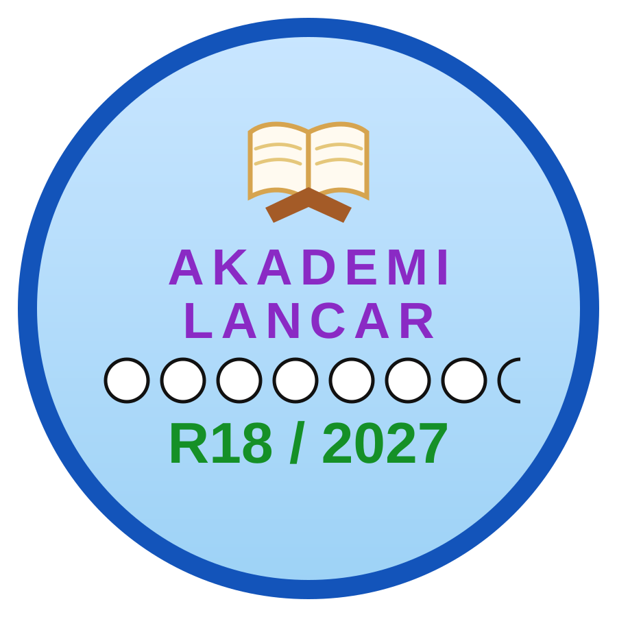

TGPU Quran
Pembelajaran Al-Quran yang merangkumi asas bacaan, Iqra’, Tajwid dan Hafazan mengikut keperluan pelajar.
Terokai TGPU Quran →Payung pendidikan TGPU Legacy untuk membina pembelajaran yang tersusun dalam Al-Quran, bahasa Arab dan pendidikan Islam — sambil menyediakan sumber ilmu yang boleh dimanfaatkan oleh keluarga dan masyarakat.
Setiap program mempunyai fokus sendiri tetapi kekal berada di bawah identiti TGPU Academy.
Pembelajaran Al-Quran yang merangkumi asas bacaan, Iqra’, Tajwid dan Hafazan mengikut keperluan pelajar.
Terokai TGPU Quran →Ruang pembelajaran bahasa Arab untuk membina asas bahasa dan kefahaman secara berperingkat.
Terokai TGPU Arabic →Ruang untuk pembelajaran asas Islam, adab, akhlak dan pendidikan keluarga yang disusun secara berperingkat.
Lihat arah program →Artikel, tip pembelajaran, bahan rujukan dan kandungan pendidikan yang menyokong program-program TGPU Academy.
Masuk Learning Hub →ISLAMIC EDUCATION CLASS · SINCE 2021
Kolaborasi PendidikanTGPU Academy menyumbang idea dan pembangunan pendekatan pengajaran bersama Islamic Education Class (IEC), dengan fokus kepada pembelajaran Islam yang lebih tersusun, interaktif dan praktikal untuk komuniti Muslim yang hidup dalam persekitaran pelbagai budaya, termasuk di Eropah.
IEC menjalankan aktiviti pendidikan Islam untuk kanak-kanak dan dewasa, termasuk kelas kanak-kanak dan sesi tadabbur. Setiap program IEC kekal diuruskan di bawah identiti IEC sendiri.
Worldwide enquiries
islamiceducation-class.de@gmail.com
Topik bersama memberi continuity kepada program, tetapi tutor masih boleh menyesuaikan bahasa, aktiviti, tahap Arabic/Quran dan kedalaman perbincangan mengikut umur, latar dan kemampuan pelajar.
Pendekatan ini membolehkan TGPU dan IEC saling melengkapi: IEC mengekalkan program dan komuniti sendiri, sementara TGPU menyediakan ruang kandungan, idea pedagogi dan laluan untuk orang ramai meneroka pilihan pembelajaran lain yang sesuai.
Logo IEC dipaparkan dengan kebenaran. Kolaborasi ini berfokus pada pendidikan dan pembangunan pengajaran; ia tidak mengubah pemilikan atau pengurusan program IEC.


TGPU Academy × Akademi LancarRuang visibility dan kolaborasi komuniti untuk pembelajaran bacaan Al-Quran secara percuma, berperingkat dan mesra pelajar pelbagai umur serta tahap bacaan.
Sesi terbuka boleh disertai oleh pelajar atau bukan pelajar tanpa mengira tahap bacaan dan tanpa pendaftaran. Antara bentuk sesi yang dijalankan termasuk bacaan Surah al-Kahfi, bedah ayat berdasarkan surah pilihan, tadarus serta variasi sesi terjemahan, follow-and-guide dan latihan untuk membina kelancaran.
Sesi tertutup / berstruktur memerlukan pendaftaran asas dan semakan bacaan. Penilaian dibuat sebelum peserta ditempatkan pada tahap yang sesuai dengan bacaan semasa mereka.
Semua kelas dijalankan secara dalam talian melalui Zoom. Tiada yuran dikenakan kepada pelajar dan pelajar tidak membayar guru. Program menerima pelbagai peringkat umur — daripada orang muda hingga warga emas — berdasarkan kesesuaian sesi dan tahap bacaan.
Selain kelas, Akademi Lancar juga sesekali mengadakan majlis dalam talian seperti tahlil dan khatam.
Pemilihan guru, semakan bacaan, penilaian tahap, jadual, pendaftaran dan pengurusan kelas kekal di bawah Akademi Lancar. TGPU Academy menyediakan ruang visibility dan laluan untuk orang ramai mengenali pilihan pembelajaran ini tanpa mengambil alih pengurusan program.
Logo R18 / 2027 Akademi Lancar kini dipaparkan bersama identiti TGPU Academy untuk bahagian kolaborasi ini.
Jika anda mengendalikan kelas Al-Quran, Tajwid, Iqra’, Hafazan, bahasa Arab atau pendidikan Islam dan mahu kelas anda dipertimbangkan untuk dipaparkan bersama TGPU Academy, sila isi borang kolaborasi. Kami akan semak maklumat terlebih dahulu sebelum sebarang feature diterbitkan.
TGPU tidak hanya bergerak dalam kelas Al-Quran. Struktur ini memberi ruang kepada pendidikan Al-Quran, bahasa Arab, pendidikan Islam dan kandungan ilmu berkembang tanpa perlu menukar identiti setiap kali program baharu ditambah.
TGPU Quran menjadi program utama yang paling jelas untuk dikembangkan sekarang. Cabang lain disediakan sebagai struktur jangka panjang dan akan dikembangkan hanya apabila kandungan, tenaga pengajar dan keperluan sudah jelas.
Tiada jadual, yuran atau janji program baharu ditambah di sini sehingga maklumat tersebut disahkan.
Jika sumber percuma TGPU memberi manfaat kepada anda, anda boleh menyokong misi surau, pendidikan dan legasi melalui DuitNow QR rasmi Surau Tok Guru Pulau Ubi.
Cadangkan topik baharu, laporkan pautan rosak, betulkan maklumat atau bincangkan kemungkinan kolaborasi dengan TGPU.